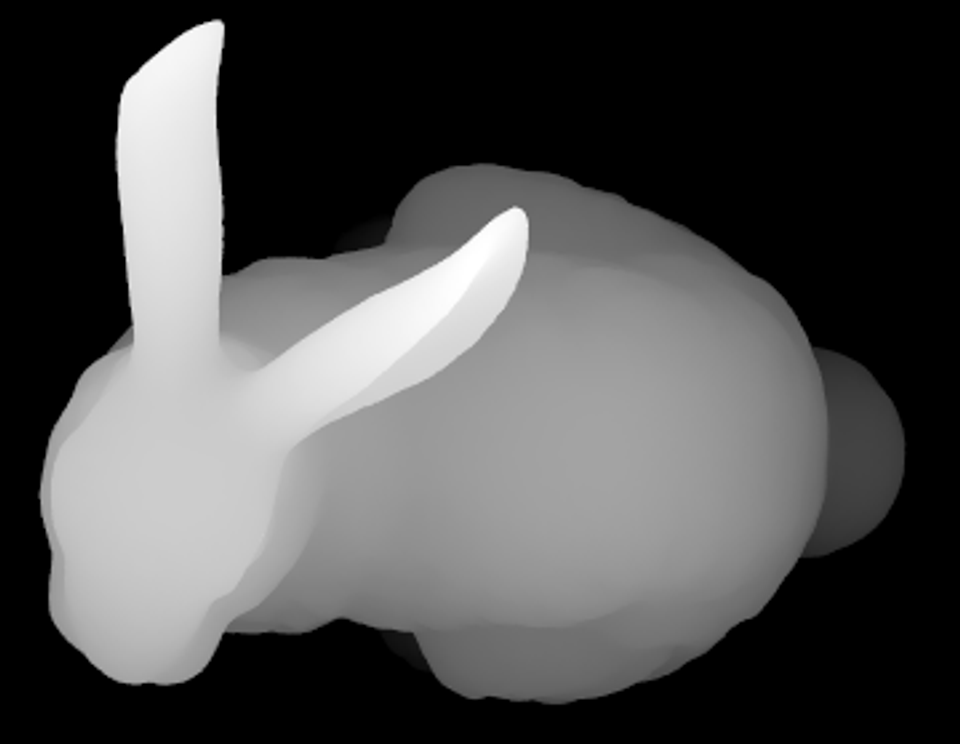
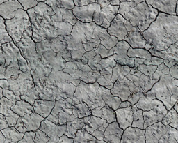

Autostereogram Generator
Based on this algorithm specification
http://www.techmind.org/stereo/stech.html
Width:
Height:
Generate Stereogram
Select Depth Map
Bunny

Select Sample Texture
Use Random Noise
Cracks
